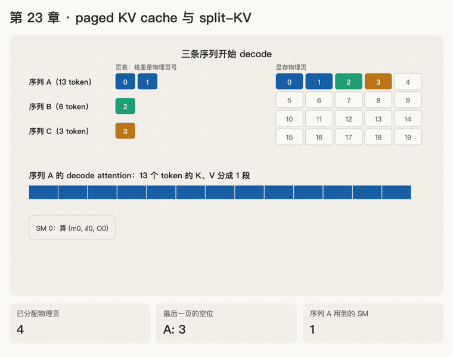

第 23 章 · 推理 kernel：decode 为什么是 memory-bound，以及 paged KV、split-KV、MLA、megakernel
本章回答：大模型生成一个 token 时，GPU 的 Tensor Core 为什么大部分在闲着？KV cache 怎么像操作系统的分页内存一样管理？一条很长的序列怎么分给很多 SM 一起算 attention？DeepSeek 的 MLA 在 kernel 层面省了什么？megakernel 又是为了解决什么？
讲解日期：2026-11-14 · 上一章：第 22 章 FlashAttention · 下一章：第 24 章 Tile 模型与 DSL
对应原文：04 调研 §3.3（FlashInfer、DeepGEMM / FlashMLA）、§3.5（megakernel：HazyResearch「Look Ma, No Bubbles!」、MPK arXiv 2512.22219）；FlashAttention-2 §2.3（online softmax 合并，materials/text/flashattention-2.txt第 138–200 行）；distributed-pretraining/materials/code/DeepGEMM-README.md；本仓库 llm-full-stack 推理部分；PagedAttention（vLLM 论文，〔旧知〕）本章缩写：KV cache = Key / Value cache（键值缓存：之前所有 token 的 K、V）· GEMV = GEneral Matrix-Vector multiply（矩阵乘向量）· GQA = Grouped-Query Attention（分组查询注意力：多个 Q 头共享一组 K、V 头）· MLA = Multi-head Latent Attention（多头潜在注意力，DeepSeek-V2/V3 用）· TPOT = Time Per Output Token（每个输出 token 的耗时）· prefill / decode（预填充：一次处理整段 prompt / 解码：一次生成一个 token）
讲解
第一步：decode 是矩阵乘向量（2026-11-14）
推理分两个阶段：
- prefill：把整段 prompt（几千个 token）一次喂进去，矩阵乘的形状是 \([\text{token 数} \times d] \times [d \times d]\)——大矩阵乘，compute-bound；
- decode：之后每步只生成 1 个 token（batch 里每条序列 1 个），矩阵乘退化成 \([b \times d] \times [d \times d]\)，\(b\) 是 batch 大小——矩阵乘向量（GEMV）。
第 9 章的公式：\(M \times K\) 乘 \(K \times N\)，FLOP \(= 2MKN\)，最少字节 ≈ 权重 \(KN \times 2\)（BF16，\(M\) 很小时权重占绝大部分）。
batch = 1 时只有约 1 FLOP/byte，H100 的脊点是 295。Tensor Core 闲着 99% 以上，时间全花在把权重从显存读进来。
数字演示（Llama-3-8B，BF16 权重约 16 GB，H100 约 3.35 TB/s）：
所以 decode 优化的主线是：少读字节（量化权重 / KV、融合）和让一次读到的权重服务更多请求（加大 batch）。
第二步：KV cache 与 paged attention（2026-11-14）
decode 的 attention：新 token 的 Q（1 行）要和之前所有 token 的 K、V 做 attention。这些 K、V 每步都重新算太浪费，所以存起来——KV cache。
Llama-3-8B（32 层、8 个 KV 头、头维度 128，GQA）每个 token 的 KV cache：
一条 8K token 的序列就是 1 GB。几十条并发请求，KV cache 能吃掉几十 GB 显存。
问题：每条序列的长度事先不知道。如果为每条序列预留"最大长度"的连续显存，大量空间浪费（碎片）。
PagedAttention（vLLM）：借鉴操作系统的分页内存——KV cache 切成固定大小的页（比如每页 16 个 token），每条序列用一张页表（block table）记录"第 k 页在显存的哪个物理位置"。序列变长就再分一页，用完归还。
对 kernel 的影响：attention kernel 不能再假设 K、V 是连续的，要先查页表、再按页读——地址计算多一步，访存以页为单位合并（第 6 章）。FlashInfer、vLLM、SGLang 的 decode attention kernel 都是这种分页版本（04 调研 §3.3）。
第三步：split-KV——一条长序列分给多个 SM（2026-11-14）
decode attention 的并行度：batch × 头数。batch = 1、8 个 KV 头时只有 8 份活，132 个 SM 里 124 个闲着（第 2 章的"block 太少"），而序列很长（几万 token）。
split-KV（Flash-Decoding 的思路，〔旧知〕）：把一条序列的 K、V 沿长度切成 S 段，每段一个 block 各算一份局部的 attention 输出，外加局部的 \((m, \ell)\)（或 LSE）；最后一个小 kernel 把 S 份结果按第 21 章的合并式合起来：
（\(O_s\) 是第 s 段已经归一化的输出。）第 21 章说"\((m, \ell)\) 能合并就能并行"，在这里兑现了：同一个算法，FlashAttention 是沿 K 方向顺序合并，split-KV 是沿 K 方向并行合并。
第四步：MLA——让 KV cache 变小（2026-11-14）
DeepSeek-V2 / V3 的 MLA：不直接缓存每个头的 K、V，而是缓存一个低维的潜在向量（latent），用的时候再通过矩阵投影还原。KV cache 大幅缩小（〔旧知〕：DeepSeek-V3 每 token 每层缓存 512 维 latent + 64 维 RoPE 部分，约相当于普通多头注意力的几十分之一）。
kernel 层面的两点：
- 推理时可以把"还原 K"的投影矩阵吸收（absorb）到 Q 那一侧，attention 直接在潜在空间算——decode 时变成"很多个 Q 头共享同一份 latent KV"，算术强度比 GQA 还高；
- 这让 decode attention 从纯 memory-bound 往 compute-bound 方向移动，于是需要专门的 kernel：DeepSeek 开源的 FlashMLA（Hopper）就是为 MLA decode 写的（04 调研 §3.3）。
第五步：量化 kernel——decode 的另一把刀（2026-11-14）
decode 是读权重读出来的，权重从 BF16 压到 INT4，字节数降为 1/4，速度上限提高约 4 倍。kernel 要做的事：读 4 位权重 → 在寄存器里反量化成 BF16 → 和激活做矩阵乘（Marlin 这类 W4A16 kernel〔旧知〕）。关键是反量化融合在 GEMM 内部（第 21 章的融合），不能先把整个权重解压成 BF16 再乘——那样就白压缩了。
FP8 / NVFP4 则不需要反量化：Tensor Core 直接吃低精度（第 20 章的块缩放），对 prefill 和训练也有用。
第六步：megakernel——消灭 kernel 之间的空隙（2026-11-14）
batch 小时，一次 decode 前向有几百个小 kernel，每个只跑几微秒到几十微秒。kernel 之间的启动开销和"上一个写回、下一个读入"的流水线空隙（bubble），能占到总时间的可观比例（第 9 章的第三类"overhead-bound"）。
两类办法：
- CUDA Graphs：把几百个 kernel 录成一张图一次提交，去掉 CPU 侧启动开销（第 26 章）；
- megakernel：干脆把整个前向写进一个 persistent kernel（第 18 章），每个 SM 从指令队列里取"下一步做哪个算子的哪一块"。HazyResearch 的「Look Ma, No Bubbles!」把 Llama-3.2-1B 整个前向融成一个 kernel，batch 1 达到 H100 带宽的 78%；Mirage Persistent Kernel（MPK）用编译器自动生成 megakernel，延迟最多降 1.7 倍（04 调研 §3.5）。
动画演示：paged KV cache 与 split-KV

可交互版：animations/23-paged-kv.html。开关：split 段数（1 / 2 / 4）。
怎么看：
- 上半部分：三条不同长度的序列，各自的页表指向显存里零散分布的物理页（颜色区分序列）；新生成一个 token 时，序列末尾那页填满就分配新页；
- 下半部分：序列 A 的 decode attention。split = 1 时只有一个 SM 在扫整条序列；split = 4 时四个 SM 各扫一段，最后合并 \((m, \ell, O)\)；
- 右边显示"用了几个 SM"和"相对耗时"。
练习与作答记录
题 1：一个 70B 参数的模型用 BF16 权重、batch = 1 在 H100 上 decode，每个 token 至少要多少毫秒？如果把权重量化成 INT4 呢？如果 batch 提到 32（忽略 KV cache 的读取），每个 token 的平均耗时大约怎么变？
作答：（待作答）
题 2：KV cache 每页 16 个 token、每 token 128 KB。一条长度 1000 的序列要占几页？最后一页浪费了多少？如果不分页、为每条序列预留 8192 个 token 的空间，浪费多少？
作答：（待作答）
题 3：split-KV 把一条序列分成两段，第 1 段得到 \(m_1 = 2, \ell_1 = 3\)，第 2 段得到 \(m_2 = 4, \ell_2 = 1\)。合并后的 \(m\)、\(\ell\) 是多少？两段的已归一化输出 \(O_1\)、\(O_2\) 在最终输出里各占多大权重？
作答：（待作答）
口诀
prefill 算不过来，decode 搬不过来：batch 为 1 时强度约为 1；
每个 token 至少读一遍全部权重：权重字节 ÷ 带宽 = 速度上限；
KV cache 分页：页表查地址，不怕碎片；
长序列 split-KV：分段各算，按 (m, ℓ) 合并；
MLA 缓存 latent、吸收投影，KV 小了强度高了；
量化要在 GEMM 里反量化；小 kernel 太多就上 Graph 或 megakernel。
本章复习卡片
- C54（decode 的算术强度 ≈ batch；每 token 时间下限 = 权重字节 ÷ 带宽）
- C55（paged KV cache 与页表；split-KV 用 \((m, \ell)\) 合并实现序列维并行）
附录 · 延伸阅读
留给以后深入学习用，不影响本章主线。★ 是建议先读的。
推荐阅读
| 读什么 | 读哪里 | 读它为了什么 |
|---|---|---|
| ★ FlashInfer 源码与文档 | 在线 github.com/flashinfer-ai/flashinfer | 分页 attention、MLA、采样、MoE 的生产级 kernel（study-plan 阶段 9.5） |
| ★ Kwon et al.「Efficient Memory Management for Large Language Model Serving with PagedAttention」（vLLM，SOSP 2023） | 在线（〔旧知〕） | 分页 KV cache 的原始论文 |
| ★ HazyResearch「Look Ma, No Bubbles!」 | 在线 | megakernel 的动机与设计 |
| Flash-Decoding 博客（Tri Dao 等，2023） | 在线（〔旧知〕） | split-KV 的原始说明 |
| DeepSeek-V2 论文 MLA 一节、FlashMLA README | 在线；本仓库 distributed-pretraining/materials/ |
MLA 的数学与 kernel |
| MPK 论文 | arXiv 2512.22219 | 编译器自动生成 megakernel |
| llm-full-stack 专题 | llm-full-stack/notes/00-full-stack-map.md 推理部分；llm-full-stack/materials/ 的 nano-vllm / mini-sglang 源码 |
推理系统全景，看 kernel 在系统里的位置 |
数学原理
- decode 的算术强度：\(\frac{2bKN}{s_w KN + s_a b(K + N)} \approx \frac{2b}{s_w}\)（权重字节 \(s_w\)；\(b\) 小时激活项可忽略）。BF16 权重时 ≈ \(b\)。
- KV cache 大小：每 token \(2 \times L \times h_{kv} \times d_h \times s\) 字节（\(L\) 层数、\(h_{kv}\) KV 头数、\(d_h\) 头维度、\(s\) 每元素字节）。
- split-KV 合并：同第 21 章 LSE 合并；最终 \(O = \sum_s w_s O_s\)，\(w_s = \ell_s e^{m_s - m} / \ell\)，\(\sum_s w_s = 1\)。
公式 / 代码清单
| 名称 | 公式 / 代码 |
|---|---|
| 每 token 下限 | t_min = weight_bytes / mem_bw |
| KV 字节 / token | 2 * n_layers * n_kv_heads * head_dim * bytes_per_elem |
| 页表寻址 | phys = block_table[seq][pos / PAGE] * PAGE + pos % PAGE |
| split 合并 | m = max(m_s); w_s = l_s * exp(m_s - m); O = Σ w_s O_s / Σ w_s |
代码对照：把本章的数字用代码算一遍
用 NumPy 在 CPU 上模拟同样的规则。代码在仓库本地
cuda-programming/solutions/chapter-code/ch23_inference_kernels.py，配套测试tests/test_ch19_23.py；同一章的 notebook：notebooks/ch23_inference_kernels.ipynb（讲解和代码放在一起，一格一格边读边跑）。Mac 上直接能跑，不需要 GPU：
bash cd cuda-programming/solutions/chapter-code uv run python ch23_inference_kernels.py # 一步一步打印 uv run pytest tests/test_ch19_23.py
讲义 ↔ 代码：
| 讲义 | 公式 / 说法 | 写法 | 跑出来 |
|---|---|---|---|
| 第一步 decode 强度 | \(2bKN / 2KN = b\) | decode_intensity(1, 4096, 4096) |
1 FLOP/byte |
| 第一步 速度上限 | 16 GB ÷ 3.35 TB/s | ms_per_token(16e9) |
4.8 ms，约 209 token/s（讲义"约 210"） |
| 第二步 KV cache | 2 × 32 × 8 × 128 × 2 B | kv_bytes_per_token(32, 8, 128) |
128 KB；8K token = 1 GB |
| 第二步 paged | 页表查物理位置 | paged_gather(pool, [7, 2, 5], 40, 16) |
取回的 K 和连续存放的一样 |
| 第三步 split-KV | 按 (m, ℓ) 合并 4 段 | split_kv(q, K, V, 4) vs attention(q, K, V) |
一致 |
| 第五步 INT4 | 字节 1/4 | ms_per_token(4e9) |
1.2 ms，上限提高 4 倍 |
关键几行：
t = np.arange(length)
phys = np.array(block_table)[t // page] * page + t % page # 先查页表，再按页内偏移
K = pool[phys]
for Ks, Vs in zip(np.array_split(K, splits), np.array_split(V, splits)):
... # 每段算 (m_s, ℓ_s) 和已归一化的 O_s
w = [l_s * np.exp(m_s - m) for ...] # 第 21 章的合并式
O = sum(w_s * O_s) / sum(w_s)
代码里才看得到的 3 件事：
pool里其他页是别人的数据：模拟里用随机数填满显存池，只有页表指到的 3 页是这条序列的；取错一页结果就对不上。- split-KV 合并的是"已经归一化"的 O_s：所以权重是 \(\ell_s e^{m_s - m}\)，最后再除以总的 ℓ；如果每段存的是没除 ℓ 的 O，合并式要相应改。
- K 除以 8 只是为了数值好看：让分数不至于太大，和算法无关。
自己改一改（不影响练习答案）：
- 把
split_kv的段数换成 1、7、2000（每段一个 token），确认结果都一样。 - 把
paged_gather的页大小换成 8，重新排页表，确认还能取回同样的 K。